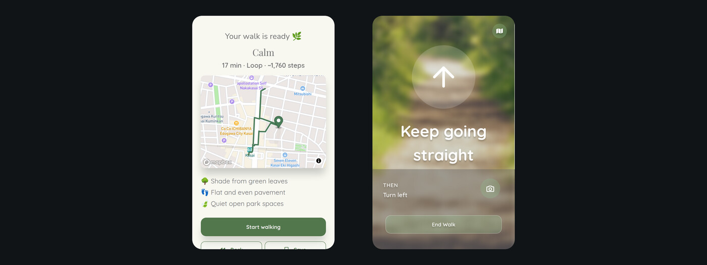
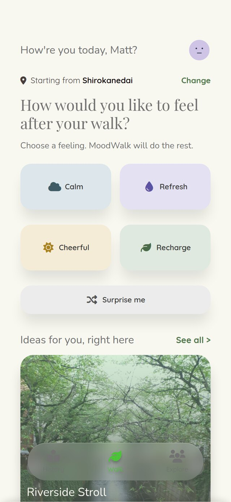
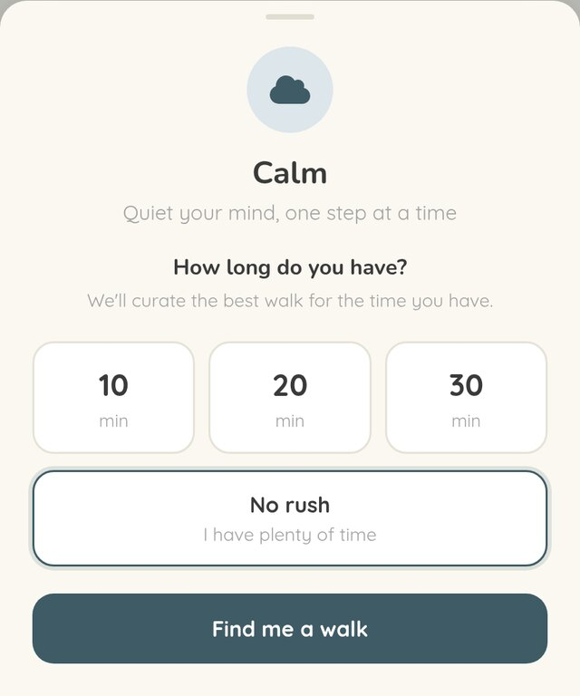
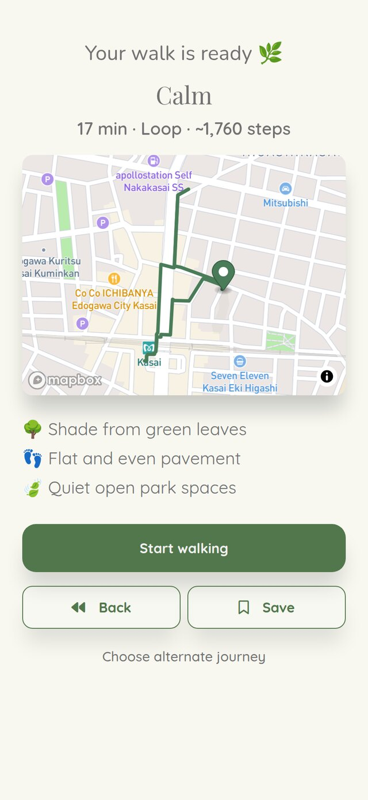
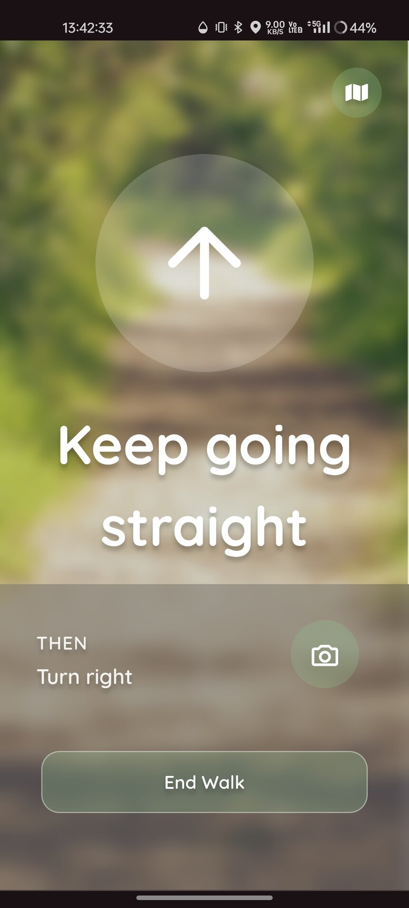
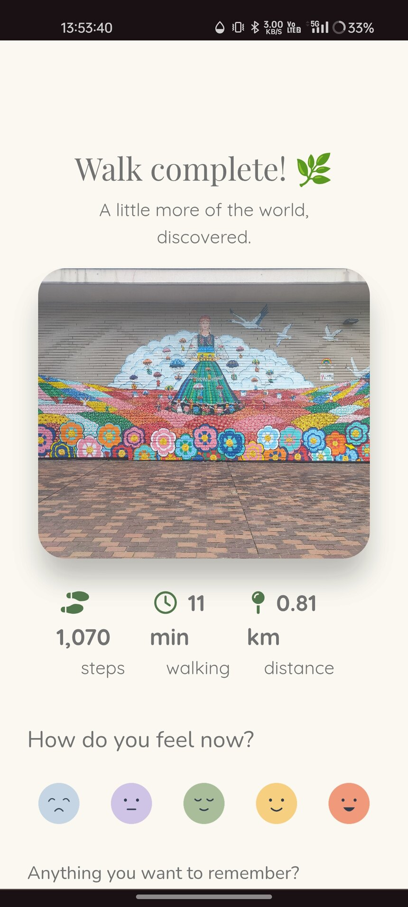
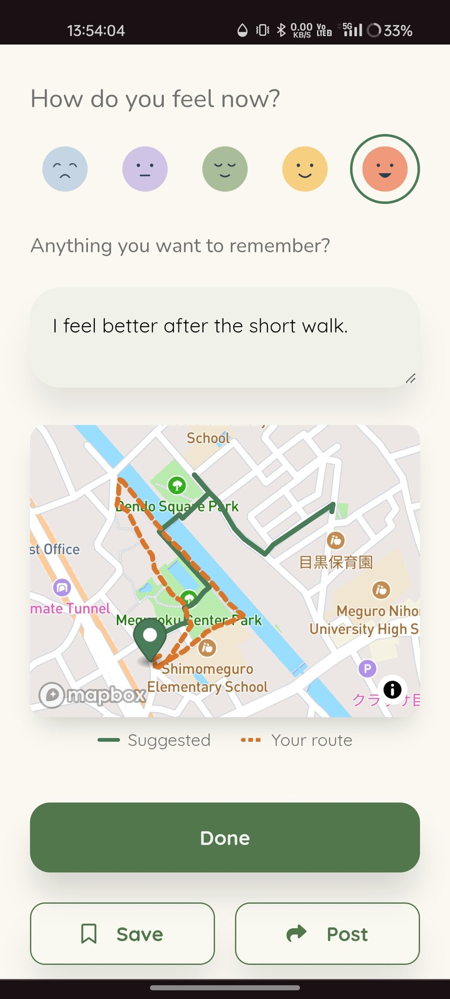
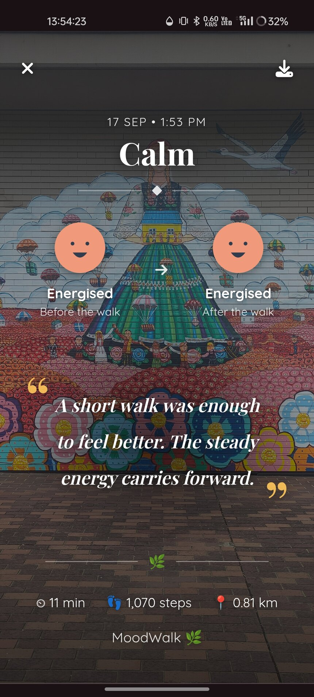

Moodwalk
A walking route generated from how you want to feel, built on real places, real street geometry, and a phone's unreliable idea of where you are.

The problem
Navigation apps answer "how do I get to X". A walk taken to clear your head has no X.
So the route has to be invented, and an invented route is only worth walking if it passes real places, follows real streets, and comes back roughly when it said it would. Three constraints that fight each other.
The walk, end to end
Seven screens, in order, photographed on a phone rather than staged in a browser. One walk in Meguro, Tokyo: the route the app built that afternoon, the guidance that ran while it was walked, and the mood and photo logged at the end of it.
-

01 Pick a feelingNot a filter over pre-made routes. The feeling decides which Google Places categories get searched near you, so the same spot on the map gives a different walk depending on the answer. “Surprise me” picks one of the five at random, server-side.
-

02 Say how longThe minutes become a target distance at a fixed 1.33 m/s, the same pace handed to Mapbox, so its estimate agrees with the number you picked rather than with its own default. Ten minutes were asked for here; the route that came back is nine, comfortably inside the 25% the builder will accept before it widens the POI search and tries again.
-

03 Get a routeNine minutes, one way, about 966 steps, through Meguroku Center Park and along the canal. One way rather than a loop because the places worth walking to all sat in the same direction. The test for that is two sections down. The distance and step count come from the route Mapbox returned, not from the target that was asked for.
-

04 Walk itTurn-by-turn from the route’s own steps, simplified to left, right and end. GPS breadcrumbs are buffered and posted as you go, which is what makes the comparison two screens down possible. The camera button attaches a photo to the walk without leaving the guidance.
-

05 FinishEleven minutes, 1,070 steps, 0.81 km: all three read off the breadcrumb trail rather than off the plan. The photo is the one taken mid-walk, a mosaic wall near Meguroku Center Park.
-

06 Log how it wentThe same screen, further down: how you feel now, anything worth remembering, and the suggested route drawn against the one actually walked. 1,070 steps against the 966 planned, and both divide by the same 0.76 m, or the difference would be an artefact of the arithmetic rather than of the walk.
-

07 Keep the memoryMood before and after, and a line written by the model from the reflection you left, the one piece of generated prose the walker actually keeps. A plain-Ruby quote is saved first, so a card is never blank while the model is still thinking.
How a route gets built
Five stages, each returning its own result object. The first one that fails stops the chain and surfaces its own error, so a dead Google Places key never looks like a Mapbox problem. Describing runs last on purpose: Mapbox rejects candidate routes often enough that describing first would pay for three descriptions and throw two away.
- 01 RouteBuilder Takes a theme and a target duration. Owns the retry loop.
- 02 PoiFinder Asks Google Places for real nearby spots, one call per category.
- 03 PoiSelector Picks 2–4 of them. Plain Ruby, no model call. Where the thinking is.
- 04 JourneyGenerator Routes through them via Mapbox Directions. Rescales and retries.
- 05 RouteDescriber Writes the description. Runs last, and mostly off the request.
Worth noting what is not here: the model does not choose the waypoints. It writes prose about waypoints already chosen by code that can be tested, and it writes it after the fact. Every journey is saved with a plain-Ruby description first, so nothing is ever blank, and a background job replaces it when the model answers. The call was two thirds of a route's build time.
Loop, or one way?
A loop that retraces its own steps is just a there-and-back with extra confidence.
The first version flipped a coin. It produced loops that walked you up one street and straight back down it, because every interesting place happened to lie in the same direction. The fix is geometric: measure the angular width of the smallest compass arc containing all the waypoints (the bearing spread), and only keep the loop if it clears ROUND_TRIP_SPREAD_THRESHOLD_DEGREES, which is 90°.
Every place sits in the same direction. Under 90°, so the loop is dropped and the same candidates are re-selected as a one-way trip.
The places fan out around the start. Clears 90°, so the route comes back a different way than it went.
Guidance that survives bad GPS
Arrival was originally "is the latest GPS fix within 8 metres of the next waypoint". On a phone, between two fixes you can move fifty metres. A short leg gets jumped clean over, no fix ever lands inside its radius, and guidance stalls forever on a corner you turned two minutes ago.
It now tests the segment between consecutive fixes against each upcoming waypoint, not just the newest point. The lookahead is capped at five, because a loop's final waypoint sits back at the start: geometrically close to you the entire walk, and nowhere near you along the path.
The whole app is a Rails 8 monolith on PostGIS. The two map API calls are synchronous, inside the request; both LLM calls were moved onto Solid Queue once it was measured how much of the wait they were.
Read the code